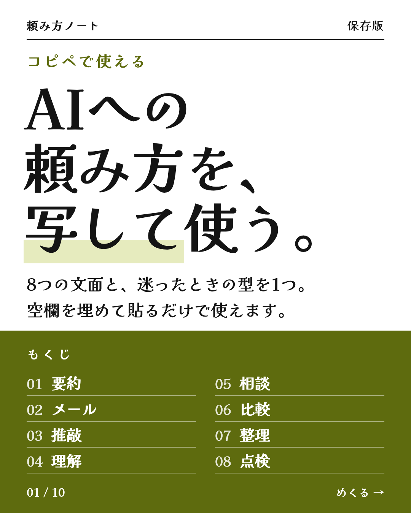
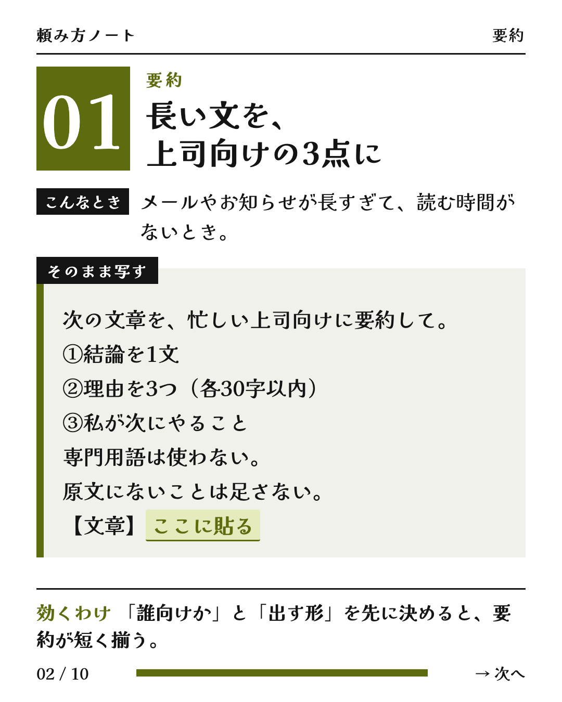
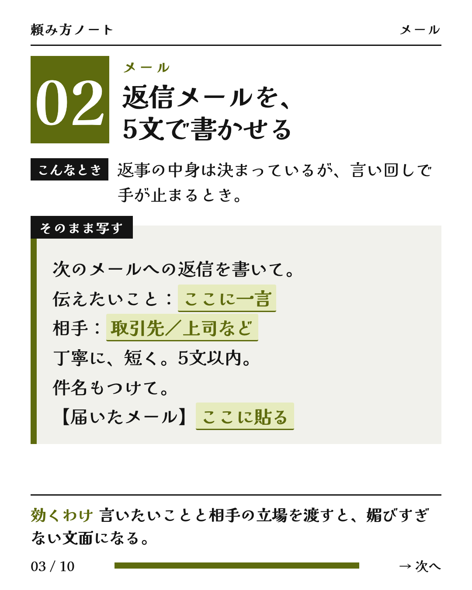
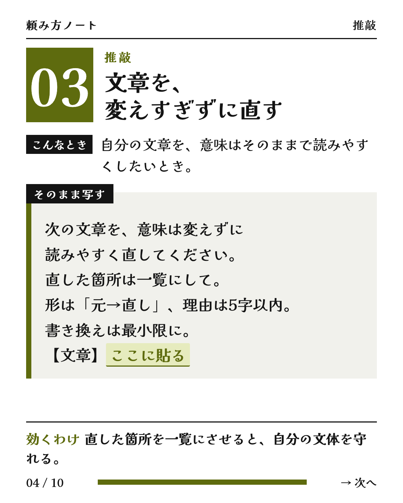
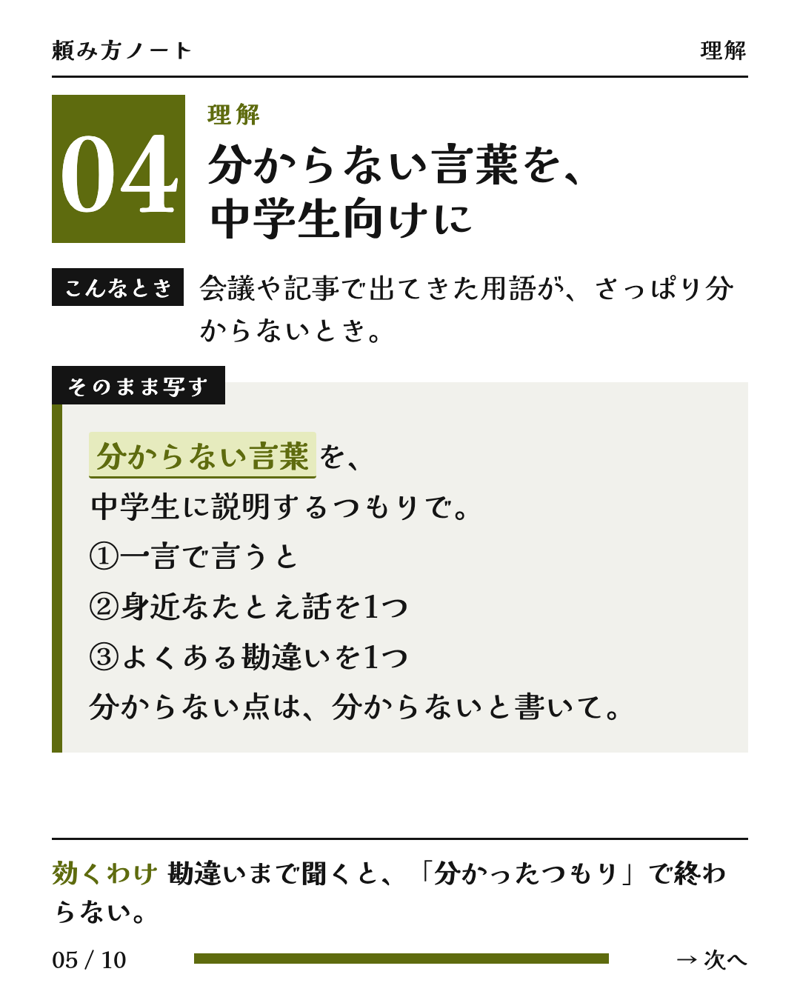
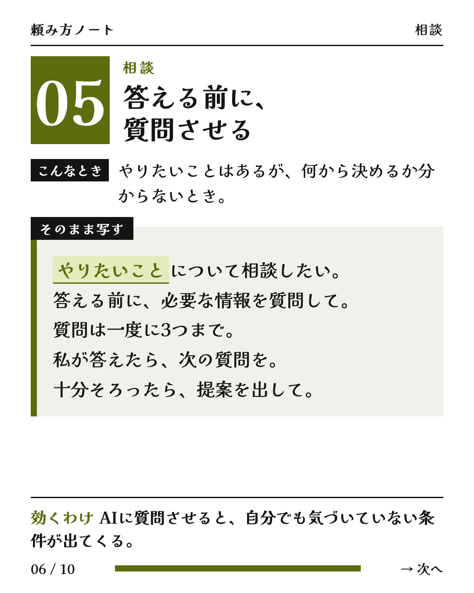
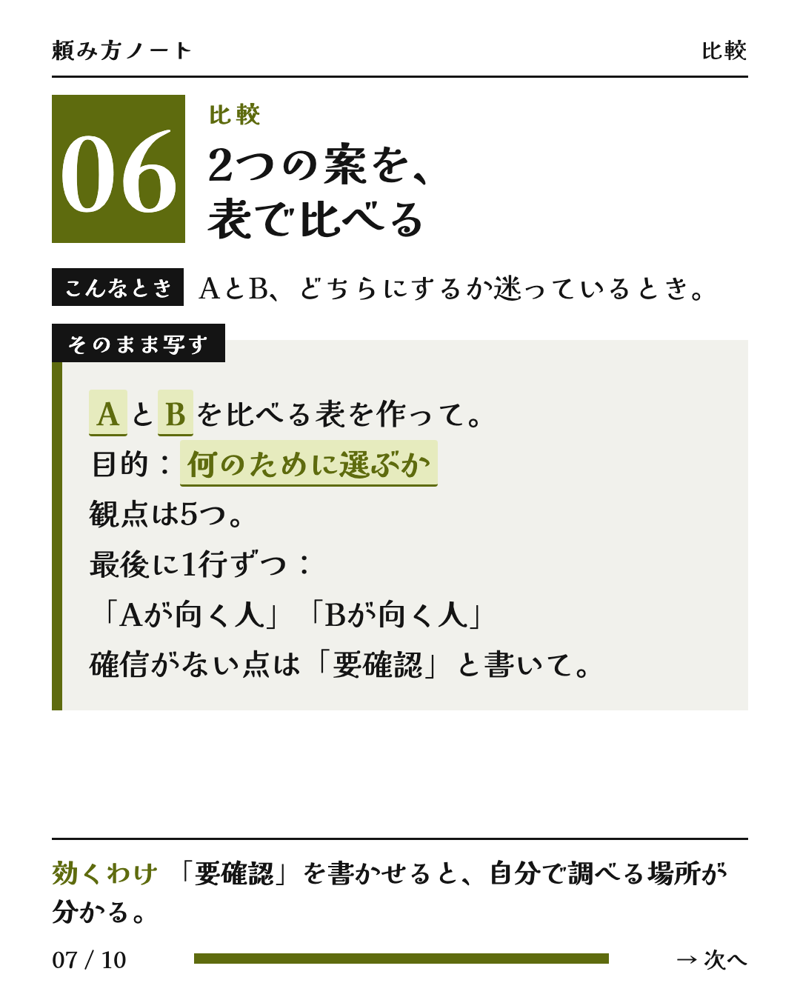
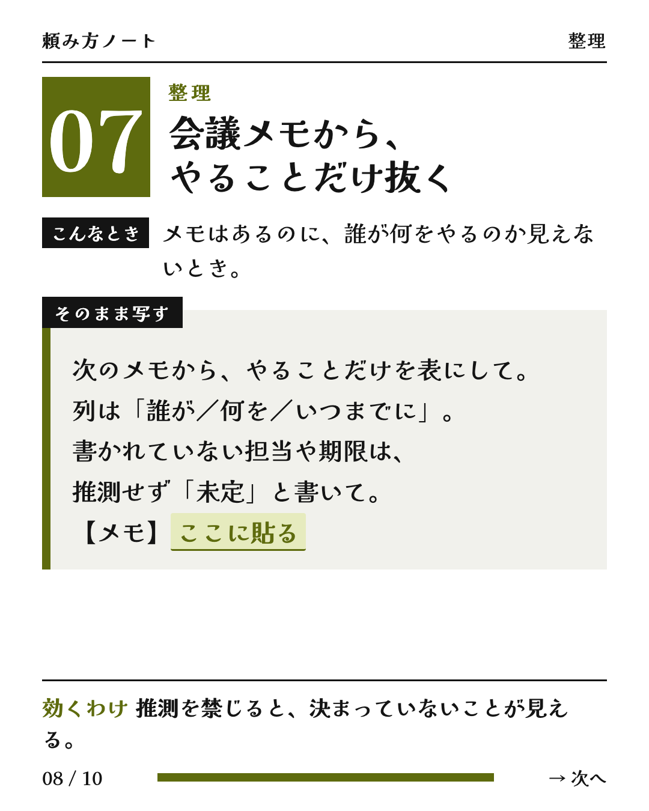
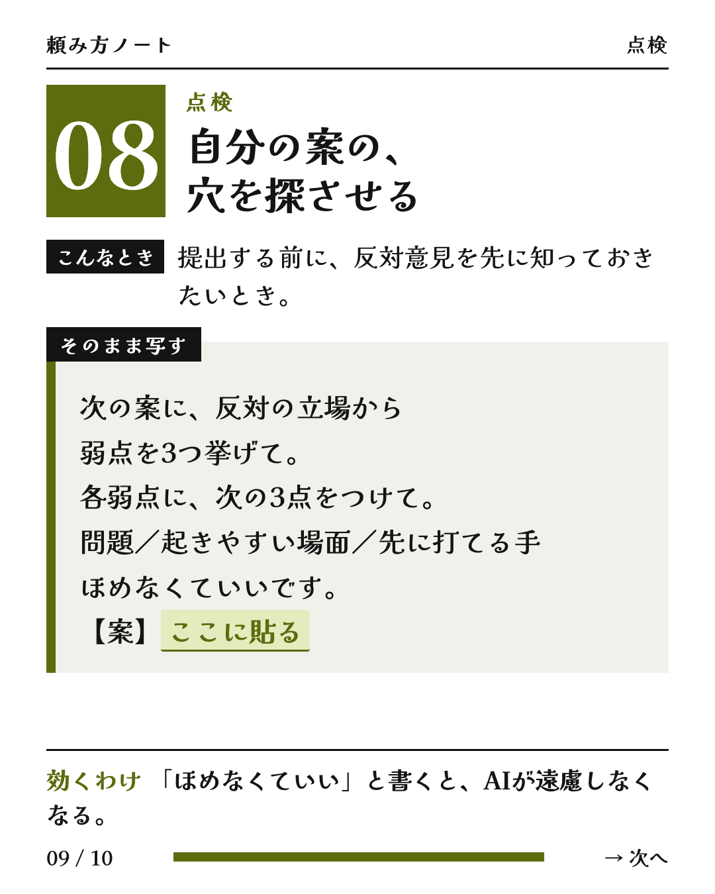
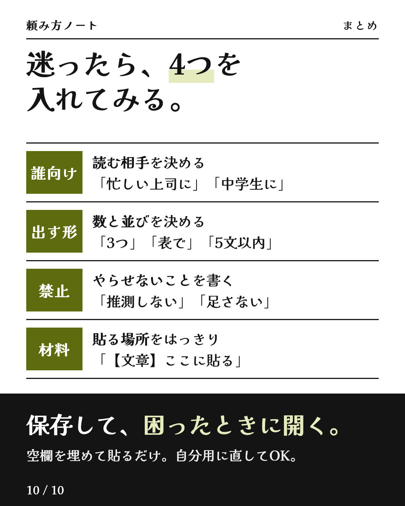

コピペで使える
動画も広告も、全部AIで回しています。使った文面と手順をここに置いています。
要約・メール・推敲・理解・相談・比較・整理・点検の8つと、迷ったときの型。










【 】の中だけ書き換えて、AIチャットに貼ってください。
あなたは会議の記録係です。下の【議事録】から、やるべきことを抜き出して表にしてください。 # 出し方 - 列は「やること」「担当」「期限」「もとの発言」の4つ。 - 1行に1つのやること。同じ内容は1行にまとめる。 - 「もとの発言」には、根拠にした議事録の文を、言い換えずにそのまま引用する。 - 最後に、同じ表をタブ区切りでもう一度出す（Excel やスプレッドシートにそのまま貼るため）。 # 守ること - 議事録に書かれていないことは、推測で埋めない。担当や期限が書かれていなければ「未定」と書く。 - 「来週の金曜」のような言い方は、会議の日付から数えて実際の日付（年/月/日）に直す。直せないときは元の言い方のまま残す。 - 決まったことと、話に出ただけのことを分ける。話に出ただけのものは表に入れず、表の下に「未決のこと」として箇条書きにする。 # 会議の日付 【2026/11/12（木）】 # 議事録 【ここにメモや文字起こしをまるごと貼る】